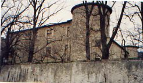
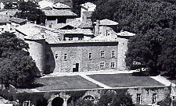
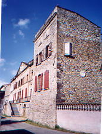
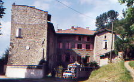
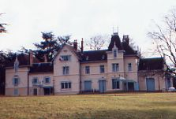

Recensement Jean-Claude Truffet
| Département | 26 — Drôme |
| Canton | St-Vallier |
| Commune | St-Vallier |
| Type d'édifice | Château |
| Période d'origine | XI |





St-VALLIER: Fief des comtes d'Albon, Dauphins du Viennois au XIe siècle, par alliance, passa dans la maison de Bourgogne, puis, en 1276, dans celle des Poitiers, au comté de Valentinois, par le mariage de Polie de Bourgogne avec Aymar de Poitiers, Un fils naquit, Guillaume qui le succède en 1332, puis excommunié par les actes de son frère et décède sans postérité, laissa à son frère co-sanguin , Ane de Poitiers la seigneurie qui, ce dernier décéda peu de temps après avoir épousé Jeanne de Savoie, ils eurent un fils Aymar. En cette période Humbert II vend le Dauphinè à la France , et les Poitiers succèdent au Poitiers en 1355, et cela jusqu'en 1524 ou il y eu des complots et conflits, Jean ou "Johan" de Poitiers, qui avait épousé Jeanne de Bartenay fut arrêter et emprisonné, et, c'est a cette période que fut raser les tours et le donjon au niveau actuel.
La fille de Jean "Diane de Poitiers" intervient auprès du roi pour libérer son père. Le fils de jean, Guillaume, ne vécut peu de temps après le décès de son père en 1546 au château de Pizançon. La seigneurie passa à Claude de Lorraine par le mariage de la fille cadette de Diane de Poitiers où il vécurent à Saint-Vallier, leur fils aîné vendra la seigneurie en 1586, à Messire Jean de la Croix de Chevrières d'une grande famille grenobloise (Parlementaire etc...) qui fit beaucoup de bien autour d'eux et surtout à Saint-Vallier par Jean-Baptiste. Cette seigneurie restera dans cette famille jusqu'en 1823 où cette dernière passa par alliance à la famille Moreton, Marquis de Chabrillan. Puis racheté par le comte Louis de Nadaillac toujours dans la famille.
RIOUX: Ce château qui appartenait premièrement aux Valernod fut acquis en 1635 par les Cothenay transformé en couvent des Picpus, le bâtiment fut vendu comme bien national en 1791 au nommé Nicolas Goudard, sieur Goudard revendit le tout à monsieur Bonjour, médecin,qui y installa une maison de Santé, et finalement ce furent messieurs Chatron frères qui en devinrent les propriétaires en 1816. En 1811, Raymond , locataire des lieux, avait installé un laboratoire de recherche, et c'est là que n'acquit le " Bleu Raymond ". (teinture)
En 1876, lorsque, après avoir acquis ce magnifique domaine , les Dames Religieuses de la Nativité y transportèrent leur pensionnat.
Aujourd'hui appartient à la ville pour des habitations individuels. LAVEYRON; commune voisine attenante à Saint-Vallier, au féodal faisait partie du mandement de Vals, érigé en 1891 appelé la "Ronceraie" par Charles Roux Meulien pour la famille Baboin (industriel), fut occupé par les allemands en 1940, acheté par la commune qui l'utilise à diverses activités communales.
St-Vallier De ce château construit au XIe siècle, avec son aspect de forteresse, tours et donjon crénelées ont étaient réduit au niveau des bâtiments en 1524 suite à l'arrestation de Jean de Poitiers. Corps de logis quadrangulaire flanqué de quatre tours rondes en angles. De la ville qui était fortifiée avec trois portes , cela a étaient détruit à la révolution, il ne reste que quelques vestiges peu apparents car les habitations ont prit appui dessus. Rioux; bâtiment rectangulaire avec fronton et une tour carrée en angle sud. Laveyron; château moderne du XXe siècle Transformé aujourd'hui en hôtel de ville.
famille de Diane de Poitiers.
Famille Jean de la croix de chevriéres famille Moreton
Famille du comte Louis de Nardaillac"
Château de Saint-Vallier.
Château des Rioux.Château de Laveyron